Basics of Computing
Computers are electronic devices that accept data as input in prescribed form, stores data, and reproduces such data as information in processed form. Computers can be intimidating, especially if you didn't grow up with them. Some tasks that seem simple to experienced users can seem impossible to new users. This course sheds more light as to what computers are and gives you complete information on how to use a computer.
Course Fee
Free
Schedule
Based on your schedule
What is a Computer?
The word 'Computer' derives itself from the Latin word "computare" meaning 'to calculate'.
A computer is simply an electronic machine that accepts data as input, processes such data, and provides such data as output in processed form called Information.
According to popular beliefs, the first computer was the Analytical Engine. Charles Babbage is considered unanimously as the father of computer because it was him who developed the first computer (Analytical Engine) in 1837.
Classifications of a Computer
There are two classifications of computer. They are
- Data Handling Capability
- Size
Classification Based on Data Handling Capability
There are three types of computer based on data handling capability. They are
-
Analogue Computer
Analogue computers are designed to process analogue data. Analogue data is continuous data that changes continuously and cannot have discrete values. We can say that analogue computers are used where we don't need exact values always such as speed, temperature, pressure and current.
Analogue computers directly accept the data from the measuring device without first converting it into numbers and codes. They measure the continuous changes in physical quantity and generally render output as a reading on a dial or scale. Speedometer and mercury thermometer are examples of analogue computers.
-
Digital Computer
Digital computer is designed to perform calculations and logical operations at high speed. It accepts the raw data as input in the form of digits or binary numbers (0 and 1) and processes it with programs stored in its memory to produce the output. All modern computers like laptops, desktops including smartphones that we use at home or office are digital computers.
-
Hybrid Computer
Hybrid computer has features of both analogue and digital computer. It is fast like an analogue computer and has memory and accuracy like digital computers. It can process both continuous and discrete data. It accepts analogue signals and convert them into digital form before processing. So, it is widely used in specialized applications where both analogue and digital data is processed. For example, a processor is used in petrol pumps that converts the measurements of fuel flow into quantity and price. Similarly, they are used in airplanes, hospitals, and scientific applications.
Classification Based on Size
There are five types of computer based on size. They are
-
Supercomputer
Supercomputers are the biggest and fastest computers. They are designed to process huge amount of data. A supercomputer can process trillions of instructions in a second. It has thousands of interconnected processors.
Supercomputers are particularly used in scientific and engineering applications such as weather forecasting, scientific simulations and nuclear energy research. The first supercomputer was developed by Roger Cray in 1976.
-
Mini Computer
It is a midsize multiprocessing computer. It consists of two or more processors and can support 4 to 200 users at one time. Miniframe computers are used in institutes and departments for tasks such as billing, accounting and inventory management. A minicomputer lies between the mainframe and microcomputer as it is smaller than mainframe but larger than a microcomputer.
-
Mainframe Computer
Mainframe computers are designed to support hundreds or thousands of users simultaneously. They can support multiple programs at the same time. It means they can execute different processes simultaneously. These features of mainframe computers make them ideal for big organizations like banking and telecom sectors, which need to manage and process high volume of data.
Mainframe computers are designed to support hundreds or thousands of users simultaneously. They can support multiple programs at the same time. It means they can execute different processes simultaneously. These features of mainframe computers make them ideal for big organizations like banking and telecom sectors, which need to manage and process a high volume of data that requires integer operations such as indexing, comparisons, etc.
-
Micro Computer
Microcomputer is also known as a personal computer. It is a general-purpose computer that is designed for individual use. It has a microprocessor as a central processing unit, memory, storage area, input unit and output unit. Laptops and desktop computers are examples of microcomputers. They are suitable for personal work that may be making an assignment, watching a movie, or at office for office work.
-
Workstation
Workstation is a single user computer that is designed for technical or scientific applications. It has a faster microprocessor, a large amount of RAM and high speed graphic adapters. It generally performs a specific job with great expertise; accordingly, they are of different types such as graphics workstation, music workstation and engineering design workstation.

Components of a Computer
There are five main components of a computer, which are:
- Input Device
- Output Device
- Central Processing Unit
-
Storage Device
- Primary Storage Device
- Secondary Storage Device
Input device enables the user to send data, information, or control signals to a computer. The Central Processing Unit (CPU) of a computer receives the input and processes it to produce the output.
Some examples of input devices are:
- Keyboard 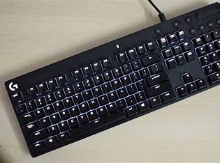
- Mouse 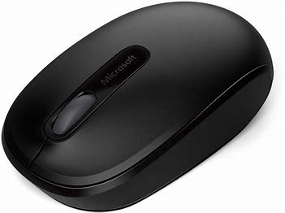
- Joystick 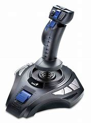
- Scanner 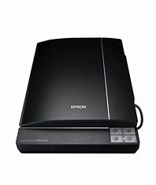
- Microphone
- Touch Screen 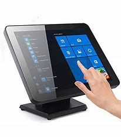
- Biometric Devices 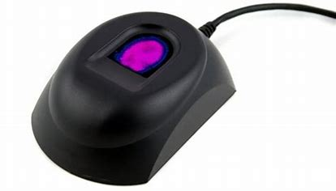
- Remote 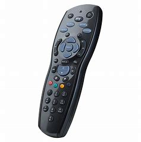
Output Device
The output device displays the result of the processing of raw data that is entered in the computer through an input device. There are a number of output devices that display output in different ways such as text, images, hard copies, and audio or video.
Some of the popular output devices are:
-
Monitor
The types of monitor are:
- Cathode Ray Tube (CRT) Monitor 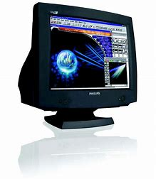
- Liquid Crystal Display (LCD Monitor) 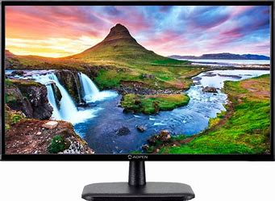
- Light Emitting Diode (LED) Monitor 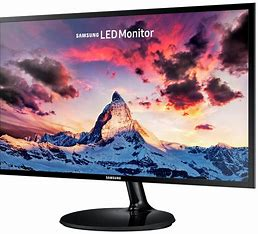
- Plasma Monitor 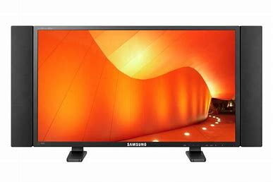
- Printer 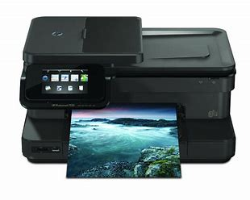
- Speaker 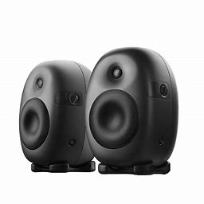
- Projector 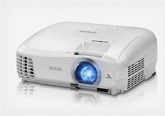
Central Processing Unit
A Central Processing Unit is also called a processor, central processor, or microprocessor. It carries out all the important functions of a computer. It receives instructions from both the hardware and active software and produces output accordingly. It stores all important programs like operating systems and application software. CPU also helps Input and output devices to communicate with each other. Owing to these features of CPU, it is often referred to as the brain of the computer.
Generally, a CPU is made up of three parts, namely:
- Arithmetic and Logic Unit (ALU) which performs arithmetic and logical functions. Arithmetic functions include addition, subtraction, multiplication division, and comparisons. Logical functions mainly include selecting, comparing, and merging the data. A CPU may contain more than one ALU. Furthermore, ALUs can be used for maintaining timers that help run the computer.
- Control Unit (CU) which makes use of electrical signals to instruct the computer system for executing already stored instructions. It takes instructions from memory and then decodes and executes these instructions.
- Memory Unit
Storage Device
There are two types of storage devices. They are:
-
Primary Memory
Primary memory is of two types:
- Random Access Memory (RAM) which is a volatile memory. It means it does not store data or instructions permanently. When you switch on the computer the data and instructions from the hard disk are stored in RAM.
CPU utilizes this data to perform the required tasks. As soon as you shut down the computer the RAM loses all the data. - Read Only Memory (ROM) which is a non-volatile memory. It means it does not lose its data or programs that are written on it at the time of manufacture. So it is a permanent memory that contains all important data and instructions needed to perform important tasks like the boot process.
- Random Access Memory (RAM) which is a volatile memory. It means it does not store data or instructions permanently. When you switch on the computer the data and instructions from the hard disk are stored in RAM.
-
Secondary Memory
The secondary storage devices which are built into the computer or connected to the computer are known as a secondary memory of the computer. It is also known as external memory or auxiliary storage.
The secondary memory is accessed indirectly via input/output operations. It is non-volatile, so permanently stores the data even when the computer is turned off or until this data is overwritten or deleted. The CPU can't directly access the secondary memory. First, the secondary memory data is transferred to primary memory then the CPU can access it.
Examples of secondary memory are:
- Hard Disk 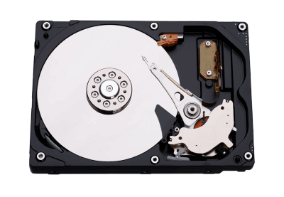
- Solid State Drive 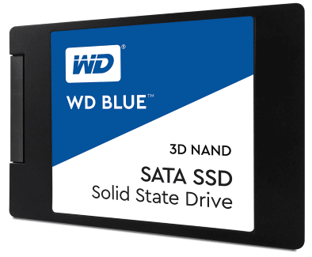
- Pen Drive
- SD Card 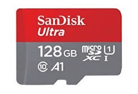
- Compact Disk (CD) 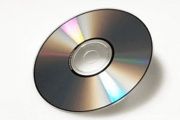
- Digital Video Disk or Digital Versatile Disk (DVD) 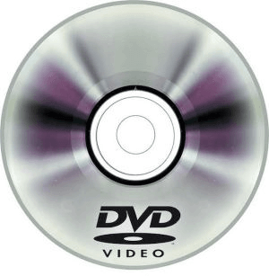

Computer Hardware and Software
Computer Hardware
Hardware, which is abbreviated as HW, refers to all physical components of a computer system, including the devices connected to it. You cannot create a computer or use software without using hardware. The screen on which you are reading this information is also a hardware.
The most common computer hardware include:
-
Motherboard
The motherboard is generally a thin circuit board that holds together almost all parts of a computer except input and output devices. All crucial hardware like CPU, memory, hard drive, and ports for input and output devices are located on the motherboard. It is the biggest circuit board in a computer chassis.
It allocates power to all hardware located on it and enables them to communicate with each other. It is meant to hold the computer's microprocessor chip and let other components connect to it. Each component that runs the computer or improves its performance is a part of the motherboard or connected to it through a slot or port.
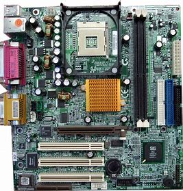
The components of a motherboard include
-
CPU Slot: It is provided to install the CPU. It is a link between a microprocessor and a motherboard. It facilitates the use of CPU and prevents the damage when it is installed or removed. Furthermore, it is provided with a lock to prevent CPU movement and a heat sink to dissipate the extra heat.
-
RAM Slot: It is a memory slot or socket provided in the motherboard to insert or install the RAM (Random Access Memory). There can be two or more memory slots in a computer.
-
Expansion Slot: It is also called the bus slot or expansion port. It is a connection or port on the motherboard, which provides an installation point to connect a hardware expansion card, for example, you can purchase a video expansion card and install it into the expansion slot and then can install a new video card in the computer. Some of the common expansion slots in a computer are AGP, AMR, CNR, PCI, etc.
-
Capacitor: It is made of two conductive plates, and a thin insulator sandwiched between them. These parts are wrapped in a plastic container.
-
Inductor (Coil): It is an electromagnetic coil made of a conducting wire wrapped around an iron core. It acts as an inductor or electromagnet to store magnetic energy.
-
Northbridge: It is an integrated circuit that allows communications between the CPU interface, AGP, and memory. Furthermore, it also allows the southbridge chip to communicate with the RAM, CPU, and graphics controller.
-
USB Port: It allows you to connect hardware devices like mouse, keyboard to your computer.
-
PCI Slot: It stands for Peripheral Component Interconnect slot. It allows you to connect the PCI devices like modems, network hardware, sound, and video cards.
-
AGP Slot: It stands for Accelerated Graphics Port. It provides the slot to connect graphics cards.
-
Heat Sink: It absorbs and disperses the heat generated in the computer processor.
-
Power Connector: It is designed to supply power to the motherboard.
-
CMOS battery: It stands for complementary metal-oxide-semiconductor. It is a memory that stores the BIOS settings such as time, date, and hardware settings.
-
-
Monitor
A monitor is the display unit of a computer on which the processed data, such as text, images, etc., is displayed. It comprises a screen circuity and the case which encloses this circuity. The monitor is also known as a visual display unit (VDU).
The types of monitor are:
-
CRT Monitor
It has cathode ray tubes which produce images in the form of video signals. Its main components are electron gun assembly, deflection plate assembly, glass envelope, fluorescent screen, and base.
-
LCD Monitor
It is a flat panel screen. It uses liquid crystal display technology to produce images on the screen. Advanced LEDs have thin-film transistors with capacitors and use active-matrix technology, which allows pixels to retain their charge.
-
LED Monitor
It is an advanced version of an LCD monitor. Unlike an LCD monitor, which uses cold cathode fluorescent light to backlight the display, it has LED panels, each of which has lots of LEDs to display the backlight.
-
Plasma Monitor
It uses plasma display technology that allows it to produce high resolutions of up to 1920 X 1080, wide viewing angle, a high refresh rate, outstanding contrast ration, and more.
-
CRT Monitor
- Keyboard
- QWERTY Keyboard - the most widely used.
- AZERTY Keyboard
- DVORAK Keyboard
-
Mouse
It is a small handheld device designed to control or move the pointer (computer screen's cursor) in a GUI (graphical user interface). It allows you to point to or select objects on a computer's display screen. It is generally placed on a flat surface as we need to move it smoothly to control the pointer.
Types of mouse include:
- Trackball mouse
- Mechanical mouse
- Wireless mouse 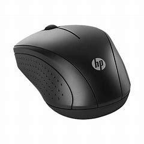
- Optical mouse 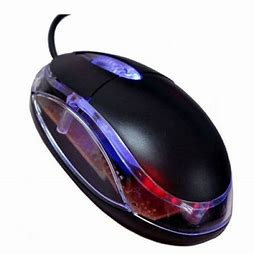
It is the most important input device of a computer. It is designed to allow you input text, characters, and other commands into a computer, desktop, tablet, etc. It comes with different sets of keys to enter numbers, characters, and perform various other functions like copy, paste, delete, enter, etc.
Types of keyboard include:
Computer Software
Software, which is abbreviated as SW or S/W, is a set of programs that enables the hardware to perform a specific task. All the programs that run the computer are software. The software can be of three types: system software, application software, and programming tools.
-
System Software
The system software is the main software that runs the computer. When you turn on the computer, it activates the hardware and controls and coordinates their functioning. The application programs are also controlled by system software. An operating system is an example of system software.
Operating System: An operating system is the system software that works as an interface to enable the user to communicate with the computer. It manages and coordinates the functioning of hardware and software of the computer. The commonly used operating systems are Microsoft Windows, Linux, and Apple Mac OS X.
Other examples of System Software are BIOS, Boot Program, Assembler, Device Driver
-
Application Software
Application software is a set of programs designed to perform a specific task. It does not control the working of a computer as it is designed for end-users. A computer can run without application software. Application software can be easily installed or uninstalled as required. It can be a single program or a collection of small programs. Microsoft Office Suite, Adobe Photoshop, and any other software like payroll software or income tax software are application software. As we know, they are designed to perform specific tasks.
-
Programming Tools
It is a set or collection of tools that help developers in writing other software or programs. It assists them in creating, debugging, and maintaining software or programs or applications. We can say that these are facilitator software that helps translate programming language such as Java, C++, Python, etc., into machine language code. So, it is not used by end-users. For example, compilers, linkers, debuggers, interpreters, text editors, etc. This software is also called a programming tool or software development tool.
Some examples of Programming tools include VS Code, Notepad++, Sublime Text, etc.


Course Materials
For better understanding of this course, you can make use of the materials provided below